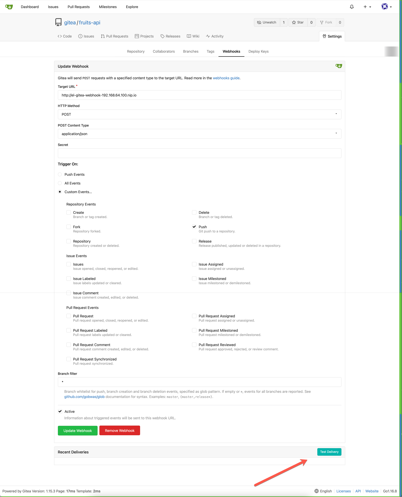

Deploy Microservices
At the end of chapter you would have,
- Deployed Tekton tasks and pipelines reuqired to build Fruits API
- Deployed the Argocd Application to deploy Fruits API
- Configure the Fruits API Webhook with Gitea
Ensure Environment¶
source $DEMO_WORK_DIR/.envrc
Pipelines¶
As part of the demo we will be using tektoncd pipelines to build and push the image to the container registry.
Deploy Tektoncd Tasks¶
The following Tektoncd community tasks will be used by the FruitsAPI as part of the application build, since tektoncd does not install these out of the box we wil install them manually,
maven¶
tkn hub install task maven \
--version=0.2 \
--context="$CLUSTER1"
git-clone¶
tkn hub install task git-clone \
--version=0.5 \
--context="$CLUSTER1"
buildah¶
tkn hub install task buildah \
--version=0.3 \
--context="$CLUSTER1"
openshift-client¶
tkn hub install task openshift-client \
--version=0.2 \
--context="$CLUSTER1"
Create Tektoncd pipelines¶
As the piplines will build and push the container image to quay.io it is required to have the following two variables set in your enviroment,
export QUAYIO_USERNAME=<your github username>
export QUAYIO_PASSWORD=<your QUAY.io password/token>
Create the pipeline fruits-api-deploy,
kustomize build pipelines \
| envsubst \
| kubectl apply --context $CLUSTER1 -f -
Tekton Triggers¶
The Tekton Triggers take care of rebuilding the application as and when the new code is committed into the Git repository.
Get the gloo gateway-proxy LoadBalancer ip to configure the gloo routes and the same will be used to configure the Git Webhooks later,
export GLOO_GATEWAY_PROXY_IP="$(kubectl --context="$CLUSTER1" -n gloo-system get svc gateway-proxy -ojsonpath='{.status.loadBalancer.ingress[*].ip}')"
Verify to see if it has value set,
echo "${GLOO_GATEWAY_PROXY_IP}"
Create Tekton Triggers that will run the image build once changes are pushed to fruits-api,
kustomize build triggers \
| envsubst | kubectl apply --context $CLUSTER1 -f -
Wait for the Gitea event listener webhook to be running,
kubectl --context=$CLUSTER1 \
rollout status deploy/el-gitea-webhook --timeout=120s
Create the dev remote to Gitea¶
export FRUITS_API_GITOPS_REPO_URL="https://gitea-$(kubectl --context="$MGMT" -n gitea get svc gateway-proxy -ojsonpath='{.status.loadBalancer.ingress[*].ip}').nip.io/gitea/fruits-api-gitops.git"
git remote add dev $FRUITS_API_GITOPS_REPO_URL
Commit and push the local code to the Gitea repository.
git commit -a -m "Repo Init"
git push dev main
The default Gitea credentials is gitea/password.
GitOps with Argocd¶
Add Gitea Repository to Argocd¶
As the Gitea repository we will be using local and uses self signed certificates, let us configure that in Argocd to skip sslVerify,
Login to Argocd,
# make sure we are in mgmt kubernetes context
kubectl config use-context mgmt
argocd login --insecure \
"$(yq e '.serviceUrl' $DEMO_WORK_DIR/argocd_details.yaml | cut -d'/' -f3 )" \
--username "${ARGOCD_ADMIN_USERNAME}" \
--password "${ARGOCD_ADMIN_PASSWORD}"
Add the local Gitea repository,
argocd repo add "$(yq e '.gitea_url' work/gitea_details.yaml)/${GITEA_USERNAME}/fruits-api-gitops.git" --username "${GITEA_USERNAME}" --password "${GITEA_PASSWORD}" --insecure-skip-server-verification
Create Application¶
Query the cluster1 info to get the cluster API URL and run the following command to create fruits-api ArgoCD application.
# Ensures colors are also removed form output
export TARGET_CLUSTER="$(kubectl --context="$CLUSTER1" cluster-info | sed 's/\x1b\[[0-9;]*m//g' | awk 'NR==1{print $7}')"
yq eval \
'.spec.destination.server = strenv(TARGET_CLUSTER) | .spec.source.repoURL = strenv(FRUITS_API_GITOPS_REPO_URL)' \
manifests/app/app.yaml \
| kubectl apply --context="$MGMT" -n argocd -f -
The Argocd application will apply the helm chart $DEMO_HOME/charts/fruits-api using Helm values from $DEMO_HOME/helm_vars/fruits-api/values.yaml.
The helm values supports by the chart are,
replicaCount: 1
# Gloo Portal Configuration
enablePortal: true
# Enable Gloo Portal RBAC
enableRBAC: false
# The Portal suffix to use with Gloo Dev Portal
# e.g. api.kameshs.me, portal.kamesh.me
portalDomainSuffix: kameshs.me
# DB Configuration to be used with Fruits API
postgresql:
global:
postgresql:
postgresqlDatabase: fruitsdb
postgresqlUsername: postgres
postgresqlPassword: password
servicePort: 5432
# the ConfigMap that will hold the DB init script
initdbScriptsConfigMap: postgres-schema
# The fruits-api image to be used in the deployment
image:
name: quay.io/kameshsampath/fruits-api
pullPolicy: IfNotPresent
tag: ""
imagePullSecrets: [ ]
nameOverride: ""
fullnameOverride: ""
serviceAccount:
# Specifies whether a service account should be created
create: true
# Annotations to add to the service account
annotations: { }
# The name of the service account to use.
# If not set and create is true, a name is generated using the fullname template
name: ""
podAnnotations: { }
podSecurityContext: { }
# fsGroup: 2000
securityContext: { }
# capabilities:
# drop:
# - ALL
# readOnlyRootFilesystem: true
# runAsNonRoot: true
# runAsUser: 1000
# The fruits-api Kubernetes Service
service:
type: ClusterIP
port: 8080
# the pod resource limit and requests
resources:
limits:
cpu: 512m
memory: 1Gi
requests:
cpu: 256m
memory: 512Mi
# Kubernetes NodeSelector Labels
nodeSelector: { }
# Kubernetes Pod Tolerations
tolerations: [ ]
# Kubernetes Pod Affinity
affinity: { }
Wait for few mins while argocd synchronizes the resource.
Trigger Pipeline¶
Once you see the resources synchronized you will see the image pull backoff as the version of image quay.io/kameshsampath/fruits-api:1.0.0 is not yet available in the repo.

Lets trigger the pipeline to build and deploy the image to quay.io repository,

The trigger should have started a pipeline,
tkn pr --context="${CLUSTER1}" ls
The command should show an output like,
NAME STARTED DURATION STATUS
fruits-api-vqpbl 26 seconds ago --- Running
You can get the logs of the pipeline by,
tkn pr --context="${CLUSTER1}" logs -f <pipeline id form earlier command>
e.g. tkn pr --context="${CLUSTER1}" logs -f fruits-api-vqpbl
Note
- The pipeline NAME may vary in your setup
- The first pipeline run will take time as it will cache maven artifacts to the nexus repository manager running in
cluster1
The sucessful pipeline should push the image to quay.io.
Wait for few mins before Argocd updates the deployment with the pushed image and show fruits-api pod running successfully.
Routes¶
As we have already deployed the Gloo Edge, the service should have been auto discovered via Gloo. Let us run the following command to verify it,
kubectl --context="${CLUSTER1}" get upstream default-fruits-api-8080 \
-n gloo-system -o yaml
Lets create route to access the API,
cat <<EOF | kubectl --context="${CLUSTER1}" apply -f -
apiVersion: gateway.solo.io/v1
kind: VirtualService
metadata:
name: fruits-api-http
namespace: gloo-system
spec:
virtualHost:
domains:
- fruits-api-${GLOO_GATEWAY_PROXY_IP}.nip.io
routes:
- matchers:
- prefix: /
routeAction:
single:
upstream:
name: default-fruits-api-8080
namespace: gloo-system
EOF
Now calling the service http fruits-api-192.168.64.100.nip.io/api/fruits will return a list of fruits.
Lets delete the test route we have created as we will be using the Gloo Developer Portal to access the API.
kubectl --context="${CLUSTER1}" delete vs -n gloo-system fruits-api-http
Portal¶
To enable porta edit and update the $DEMO_HOME/helm_vars/fruits-api/values.yaml enablePortal to true. Commit and push the code to git repository to see the Argocd synchronizing the application to create the new Gloo Portal resources,
yq -i e '.enablePortal=true' $DEMO_HOME/helm_vars/fruits-api/values.yaml
git commit $DEMO_HOME/helm_vars/fruits-api/values.yaml -m "Enable Portal"
git push dev main
Wait for Argocd to synchroize the commit, once the commit is synchronized you should see the Gloo Portal resources created in the default namespace,
kubectl --context="${CLUSTER1}" get apidocs,apiproducts,portal,environment
NAME AGE
apidoc.portal.gloo.solo.io/apidoc-v1-fruits 2m21s
NAME AGE
apiproduct.portal.gloo.solo.io/fruits-product 2m21s
NAME AGE
portal.portal.gloo.solo.io/fruits-portal 2m21s
NAME AGE
environment.portal.gloo.solo.io/dev 2m21s
Now you can open the portal on your browser using the domain http://portal.kameshs.me
Tip
Update your /etc/hosts as shown to allow accessing the portal using domain names
192.168.64.100 api.kameshs.me api
192.168.64.100 portal.kameshs.me portal
192.168.64.100 is the minikube -pcluster1 ip
Enable Authentication¶
As you have observed by navigating to the APIs that all APIs are read only. To make the portal accessible we need to enable authentication.
To enable porta edit and update the $DEMO_HOME/helm_vars/fruits-api/values.yaml enablePortal to true. Commit and push the code to git repository to see the Argocd synchronizing the application to create the new Gloo Portal resources,
yq -i e '.enableRBAC=true' $DEMO_HOME/helm_vars/fruits-api/values.yaml
git commit $DEMO_HOME/helm_vars/fruits-api/values.yaml -m "Enable Portal RBAC"
git push dev main
Now hit the login button and try login to the portal using the user dev1 and password mysecurepassword. Now when you check the APIs section it has the Try out option that allows you try the APIs.
When you try the API from CLI,
http api.kameshs.me/fruits/v1/api/fruits
You should see you are not authorized,
Let use geneate an API Key for dev1,
http api.kameshs.me/fruits/v1/api/fruits 'api-key: $API_KEY'
Monetization¶
Lets enable access to Admin console of the portal,
kubectl --context="${CLUSTER1}" -n gloo-portal port-forward svc/gloo-portal-admin-server 8080
DB Setup¶
Lets create the requests table,
kubectl --context="${CLUSTER1}" get cm \
-n gloo-system postgres-schema -o yaml \
| yq e '.data["init-schema.sql"]' > /tmp/gloo-portal-db.sql
Deploy the DBAdminer utility,
kubectl --context="${CLUSTER1}" apply -k mainfests/dbadminer
kubectl --context="${CLUSTER1}" rollout status deploy/db-adminer
Open the DB Adminer via the browser,
export DB_ADMINER_IP=$(kubectl --context="${CLUSTER1}" get svc db-adminer -ojsonpath='{.status.loadBalancer.ingress[*].ip}')
Open the url http://$(DB_ADMINER_IP):8080, use the Posygresql as database with user id postgres and password password. Then run the following SQL command to create the requests tabl using the sql /tmp/gloo-portal-db.sql
Lets fire some requests to the API to generate the API calls graph,
for i in {1..5};
do
http api.kameshs.me/fruits/v1/api/fruits 'api-key: $API_KEY'
done